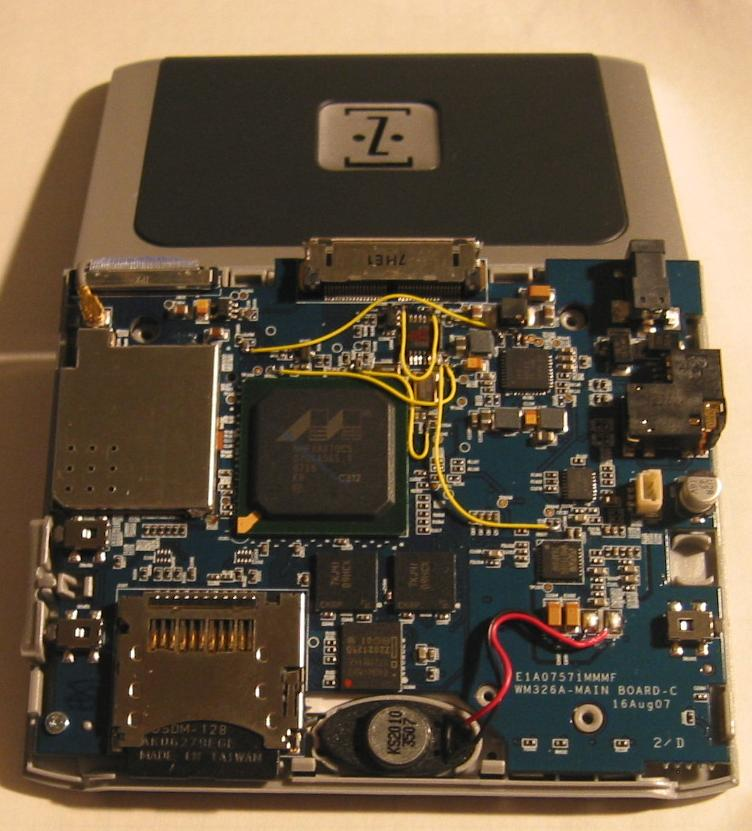

The new Zipit Version 2 (Z2) is closed consumer electronics device.
Under the covers it runs Linux.
Currently it is available at a low price.

(older board, newer Zipit2s have cleaned up board - no yellow wires)
Older Zipit V1 Linux hacking
The ZipIt Wireless Instant Messaging is a kid's IM device with built-in WiFi (802.11b), 320x240 grayscale LCD and thumb-style keyboard all in a small package with a LiIon battery.
Current retail price $100.
Out of the box, the ZipIt device will connect to WiFi networks (802.11b/g) that have Internet access and connect to various popular IM services (AOL, MSN, Yahoo).
This webpage discusses hacking the device to use for other things.
Using some WiFi tricks you can perform a software reflash upgrade of your ZipIt device to run Linux direcly.
For more advanced hacking, a hardware modification is recommended.
Credit goes to Aeronix and the KByte folks for creating a cool little device at an affordable price.
Major credit goes to ken AKA 'cynfab' from the Yahoo BBS.
Lots of work in the Linux kernel patches and the busybox build.